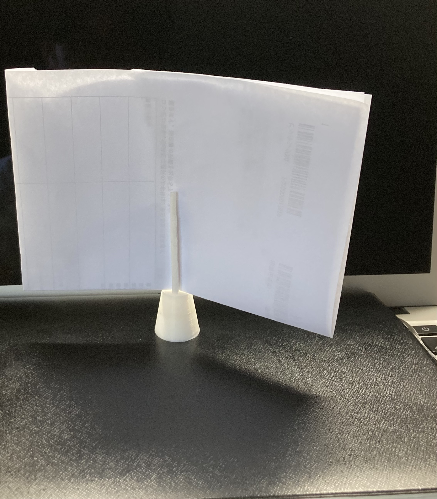
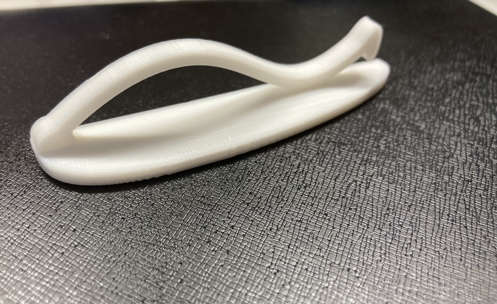
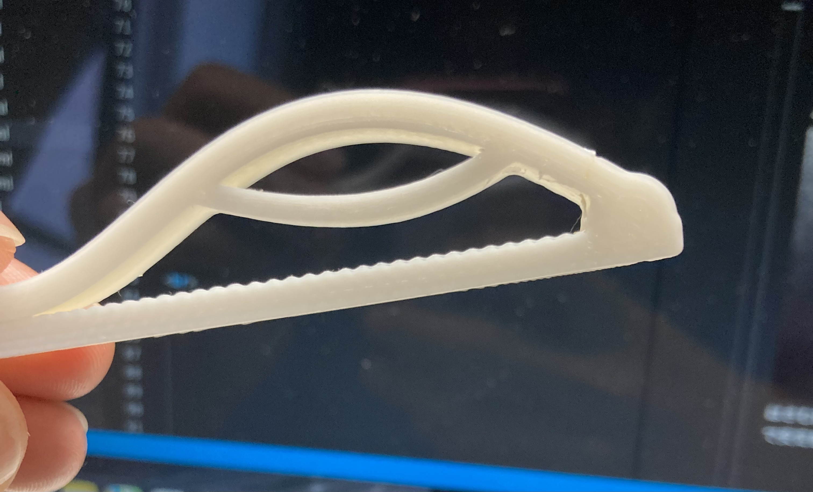

6月 4回目更新
今週制作したモノ
＜１＞
↑これを前回の課題を解決したデザインで印刷してみた
まずこのように改良⇩
持ちやすいように穴を開け、上には取手をつけた
ここで問題発生
→上につけた取手のせいで、開くのを妨げるように力がかかってしまい、はさむのに力が余計に必要になり、使いづらくなった
余計な力がかからないように改良⇩
使いやすさを残したまま、つけやすさ。外しさやすさを考慮したデザインに仕上げた
ここで問題発生
→見た目はおちたなぁと思ってたら、ミーティングでやはりダサいとの意見が出てしまった
個人的にこいつには愛着があるのでなんとかシンプルで受け入れられるデザインで完成させたい。本当に使いやすいと思ってる
＜２＞
今までは上から抑えるようにはさむモノばかりだったので横からもはさめるモノをおためしで制作していた
最初に作ったのがこれ⇩
理想のコンパクトさで最初デザインした。一回使ったら折れてしまい使い物にならなかったので大きさと仕様を変えて再トライ
こんな感じになった⇩
大きさを1.4倍にして、置くこともできるようにデザインした
このように使えます⇩

強度が弱すぎて紙くらいしかはさめない
＜３＞
横からのやつもう一種類やってた
最初に出したのはこれ⇩
はさむ力が弱くて、安定感がない

片側を面にしたことで安定感はUP、はさむ力はちょっと足りないという感じだった
そこで出したのがこちら⇩
はさむ部分の幅を大きくしてはさむ力UP、はさむ力がかかる部分にギザギザをつけたことで安定感UP
⇩こんな感じでギザギザいれてます⇩

＜４＞
前回の布団用を直したやつ
つけやすくはなった。あとは特になし
＜５＞
一発で印刷できて、サポートなしの新しいはさむ構造を考えて印刷した。今回はお試し
初回お試しで出した割にはよかったので大きく載せよう
今までは一番汎用性高そう
先端のはさむ部分が印刷時にくっつかないように、少し幅を空けている
そのデザインの影響や、はさむ力はそれ自体の弾性力のみなので、はさむ力は弱めであり、少し幅のある物しか挟めない
→今後の目標は紙一枚でもはさめるような力を持たせること
来週は＜５＞の改良を中心に進めていく
＜実際に使ってみた＞
＜１＞
非常に使いやすい、お気に入り
＜５＞
やはりグリップ力は弱め、掴むものが丸かったため滑った。
撮影協力：ジェリー